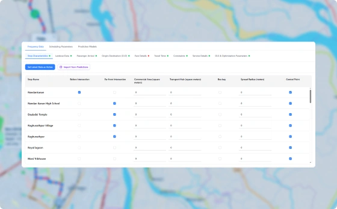
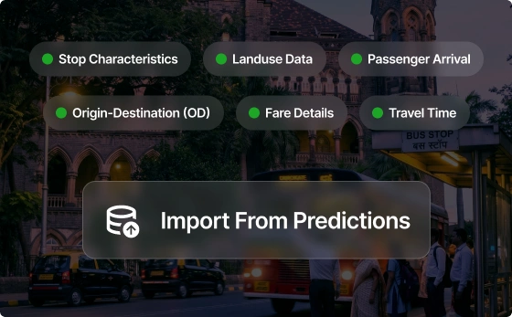
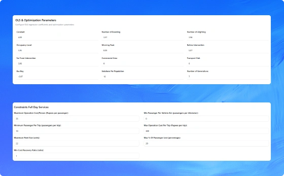

Centralize operational data from across your transit network into a single, reliable source of truth.

Maintain all critical planning data in one centralized, organized workspace.

Track data readiness with clear progress indicators across every section.

Maintain historical and future planning datasets without losing context.
See how PUBBS Transit brings planning, scheduling, dispatch, fleet management, and passenger services together in one connected platform.
Book a Demo